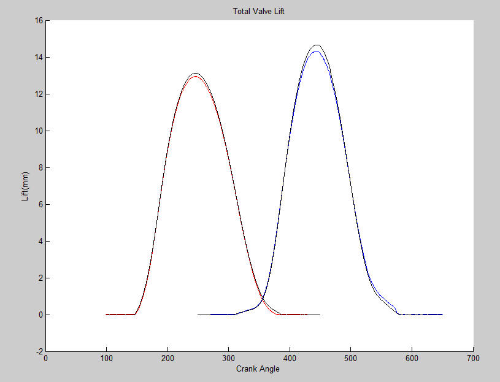
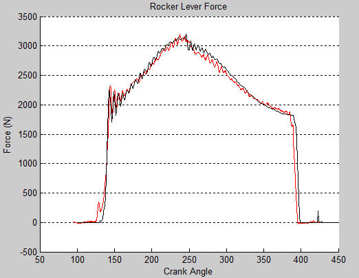
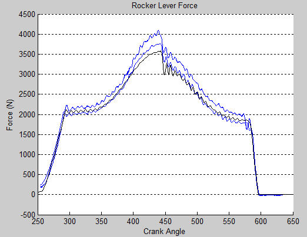
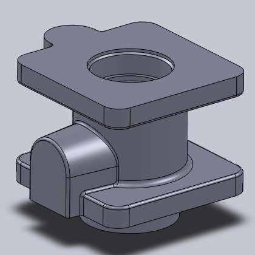
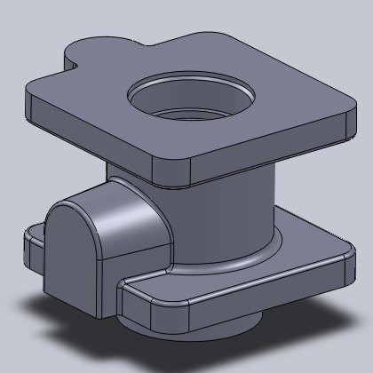

I am a Mechanical Engineer with a passion for designing and creating. I have a Bachelors and Masters Degree in Mechanical Engineering from the University of Dayton. During graduate school I was a contract worker for the Air Force Research Labs at Wright-Patterson Air Force Base where I did research on morphing wing mechanisms. I also spent time working on spherical mechanisms in grad school.
For the past four years I have been working as a design engineer for Cummins Inc., working on diesel engines. During my time at Cummins I have worked on geartrain components, castings and housings, valvetrains and camshafts. At Cummins I have been using Analysis Led Design tools throughout the product design procedure and have also performed a lot of structural analysis, thermal analysis and dynamic analysis.
In addition to the professional work I have done, I also get involved in many engineering projects to learn new skills and expand my engineering knowledge. These areas unclude composites work, electronics and computer science.
Mechanical Design
Valvetrain Work
  


Geartrain Work


Bolted Joint Design and Analysis


Failure Analysis


Casting Design

Thermal Analysis


Graduate Thesis
Thesis Summary

Test Rig

Computer Model

Electronics Projects
Circuit Design

Hobby Robotics
Composites
Bicycle Frame


Surfboard
Supermileage Vehicle

Cad Modeling


 
